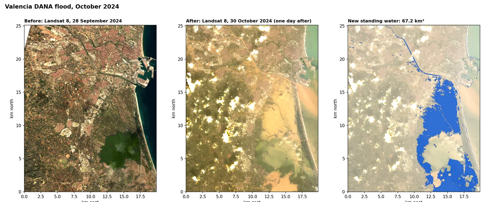
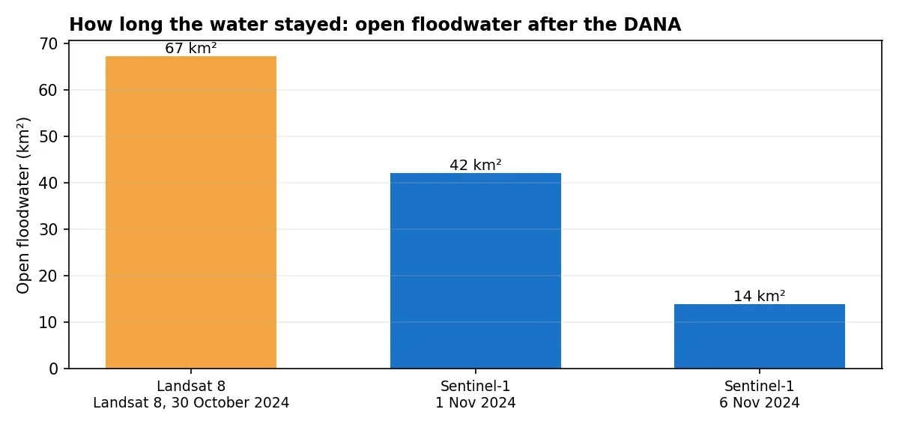
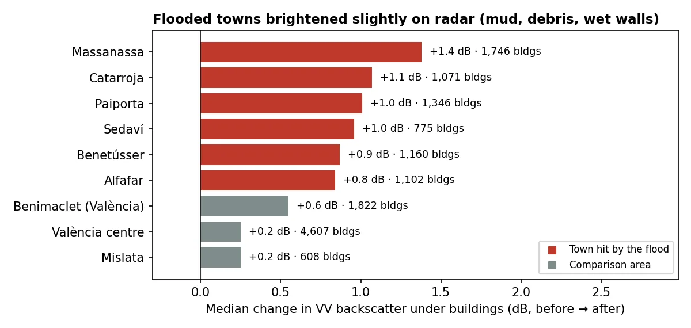

The question
Emergency teams and insurers need to know where the water went and for how long, quickly and over a wide area. Ground surveys are slow and dangerous straight after a flood, and storm cloud often blocks ordinary satellite photos.
What I did
- Compared optical images from before and after. Landsat 8 photographed the area on 28 September and again on 30 October, one day after the flood. A water index (MNDWIModified Normalised Difference Water Index: (green − shortwave infrared) ÷ (green + shortwave infrared). Water scores above zero.) shows which pixels turned to water.
- Let the data choose the cut-off. Instead of picking a threshold by eye, OtsuOtsu's method picks the threshold that best separates two groups in a histogram, here water and land, without a human choosing it.'s method found it from the image itself. I then reran the map with the threshold moved up and down to show how much the answer depends on it.
- Added radar, which sees through cloud. Sentinel-1 SARSynthetic aperture radar. The satellite sends its own microwave pulses, so it images through cloud, day or night. images from 20 October and 1 November show water as dark areas. A pixel counted as flooded only if it was dark after the flood, not before, and darker by at least 3 dBDecibels: a log scale for radar brightness. Every 10 dB is a factor of ten in reflected energy..
- Tracked the water draining. A second radar pair (25 October and 6 November) shows how much water was left a week later.
- Counted exposed buildings. I overlaid 79,000 OpenStreetMap building outlines on the flood maps.
What the maps show

Most of the floodwater sat on the rice paddies and fields around the Albufera lagoon. The two satellites, three days apart, agree on the large bodies of water: radar confirms 57% of the area Landsat mapped, and finds another 3.5 km² that Landsat missed under cloud.


The worst-hit towns, such as Paiporta and Catarroja, had already drained by the time any satellite passed over, so they don't show up as open water. On radar, though, their buildings became 0.8 to 1.4 dB brighter, while unflooded parts of València changed by only 0.25 to 0.55 dB. Mud, debris and wet walls explain the difference.
How sure can we be?
- The building count is a minimum. Only 191 buildings sat in open water on 30 October. Many more were damaged by water that had already drained.
- The threshold matters. Moving the Landsat threshold by ±0.15 gives 51 to 99 km². That range is reported alongside the main figure.
- One snapshot per satellite. Flooding that came and went between overpasses can't be seen.
- Not yet checked against official maps such as the Copernicus Emergency Management Service delineation for this event.
What a client gets
- Flood extent layers (GeoTIFF and GeoPackage) for each date
- A list of exposed buildings and roads
- Map sheets and a short report with the uncertainty range, ready for emergency, insurance or planning teams
- The code, so the same analysis can be rerun for the next event